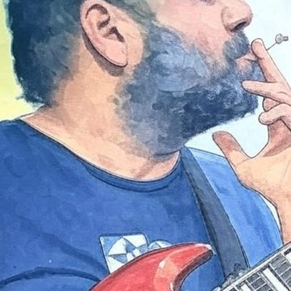

Goa's genre-blending guitar legend.
"The sound should come from heart, then transmitted to brain, directing the fingers to move — sound should always come from heart."
Elvis Lobo — known across Goa simply as "The Boss" — is a true Goan legend and cultural icon. For decades he's been the beating heart of the Goan music scene, effortlessly blending blues, jazz, and rock into something that's entirely his own.
He doesn't just perform — he builds a community through sound, casting a spell on anyone who watches him play live.
Elvis is Moving Arts Program's most frequent and definitive collaborator. MAP was built on the goodwill and energy he brought to Goa's independent music scene, and this page — The Boss Den — is our archive of that partnership: dozens of nights of magic, the ones we were lucky enough to catch on film.

Hover or tap the photo to see the album
"One should try to be a better human being first, go with flow, music will take its course and fall in place."